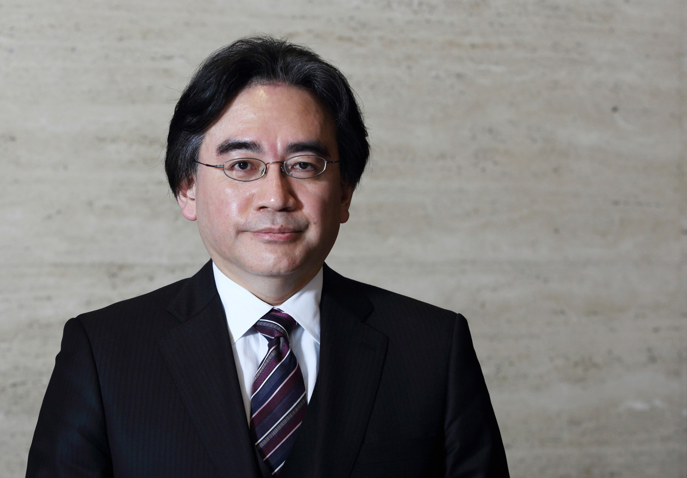

On my business card, I am a corporate president. In my mind, I am a game developer. But in my heart, I am a gamer.

Satoru Iwata was a reknowned Japanese video game programmer and businessman.
He is best known as the fourth president of the Japanese video game company, Nintendo.